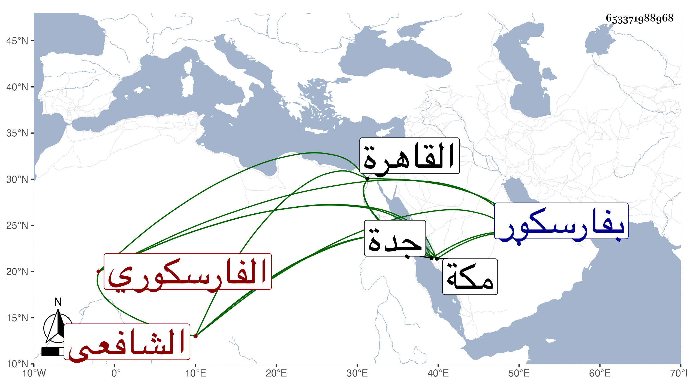

0902Sakhawi.DawLamic.ITO20230111-ara1.EIS1600.653371988968
Biography ID: 653371988968
367
أبو الطيب بن محمد بن يوسف بن علم الدين الشمس بن الزين الفارسكوري الشافعي الماضي أبوه وعماه محمد وإبرهيم وأبوهم يوسف ويعرف كل منهم بابن الفقيه يوسف واسمه محمد ولد سنة ستين وثمانمائة تقريبا بفارسكور واشتغل بها وحفظ كتبا ثم حضر بالقاهرة عند الفخر المقسي وغيره وفهم وشارك وجاو بمكة سنين وأقرأ بها بعض أبناء التجار وربما تكسب من جدة ونحوها ولقيني هناك في سنة اثنتين وتسعين والتي بعدها فلازم في سماع البخاري ومسلم والأذكار وغيرها دراية ورواية وكتب له إجازة حسنة وهو خير فاضل كثير الأسئلة مجيد الاستحضار ورجع مع الركب آخر سنة أربع وتسعين إلى بلده فألزمه ابن شعبة بالدخول في القضاء وكان فيما أظن كارها فيه وجاءني كتابه مرة بعد أخرى ثم سخط عليه ابن شعبة فصرفه وعوضه بابن خروب صبي مهمل فلم يلبث أن خرج هاربا واستمر هذا مقيما ببلده مصروفا .
